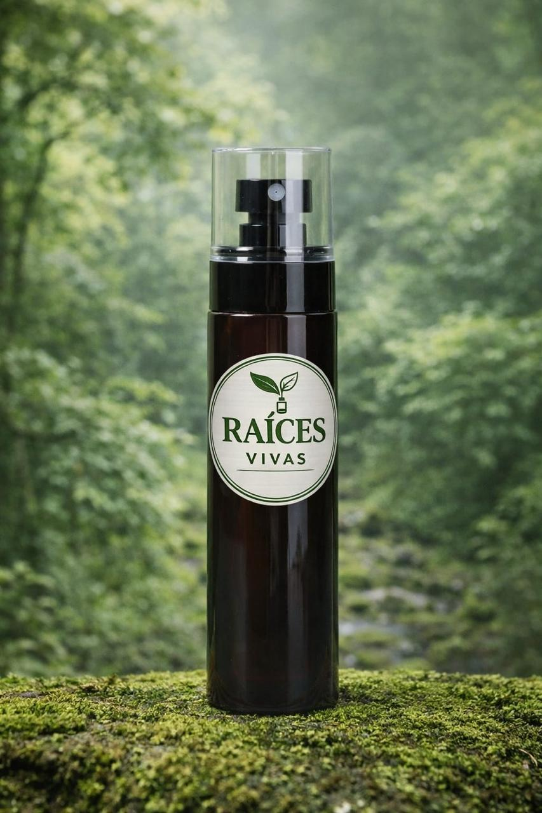
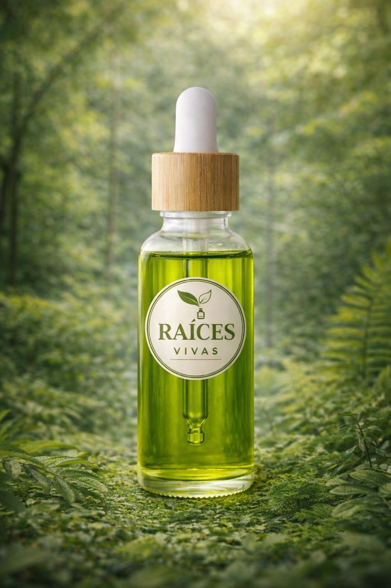
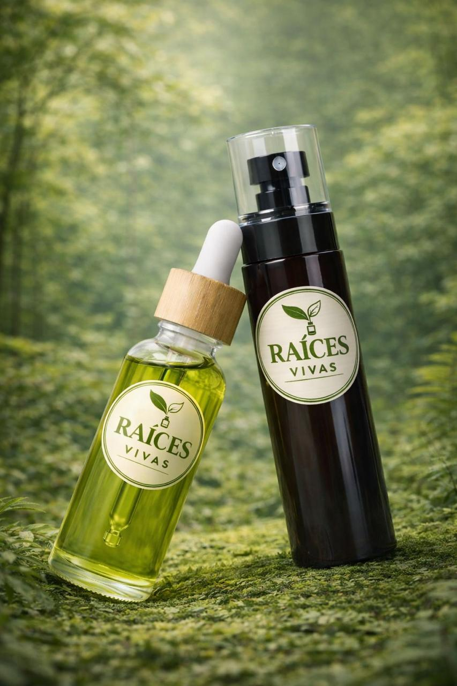

Cuidando tu cabello natural
Raíces Vivas ofrece dos productos principales elaborados con ingredientes naturales, libres de parabenos, sulfatos y siliconas.

Estimula el crecimiento, fortalece raíces, previene caída y mejora la circulación del cuero cabelludo.

Hidrata profundamente, repara daños, aporta brillo, suavidad y nutrientes esenciales.
Ambos productos reflejan el equilibrio entre belleza, salud y naturaleza, cuidando tu cabello de forma real y sin químicos agresivos.

Nació con el propósito de ofrecer alternativas saludables frente a productos agresivos que causan resequedad, caída y debilitamiento.